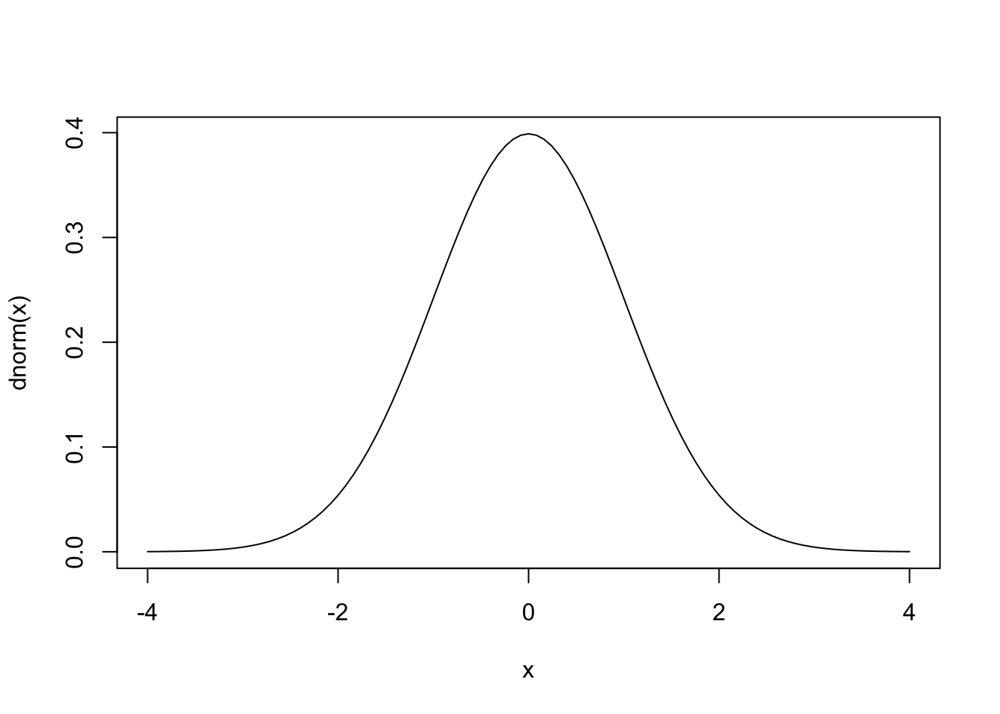
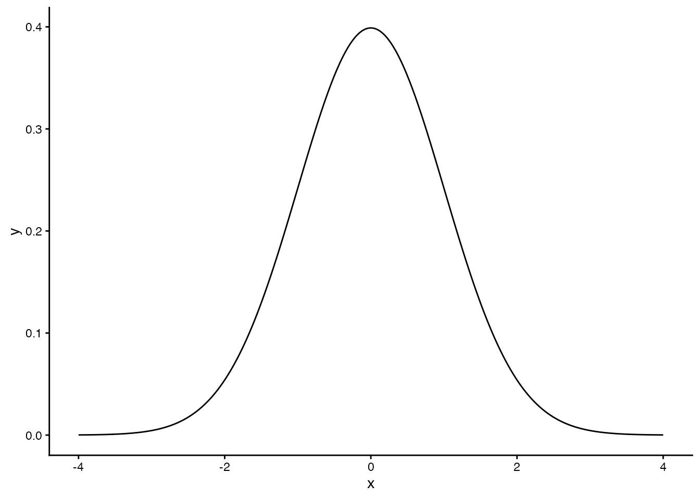
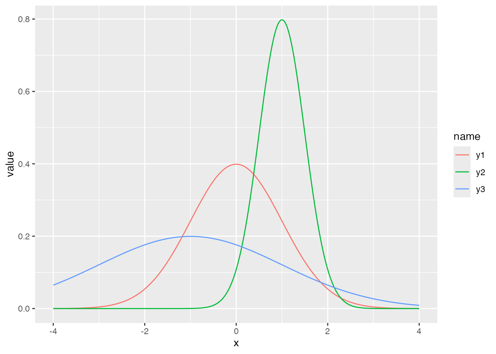
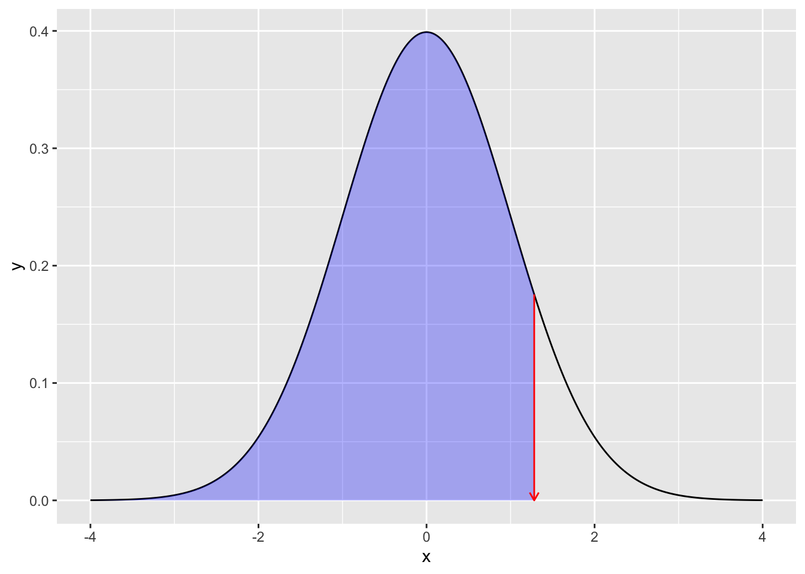
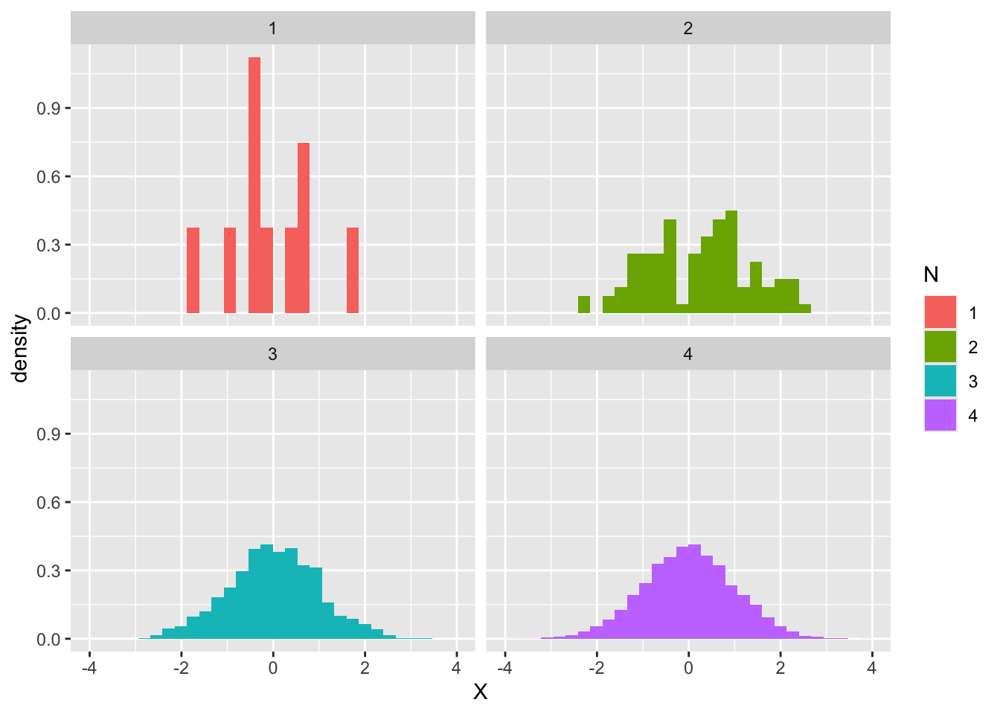
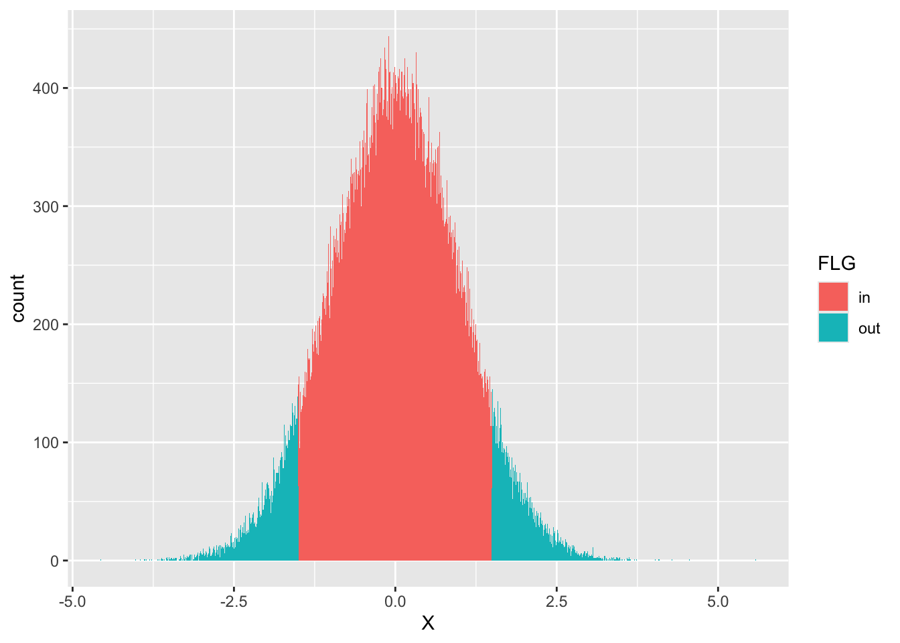
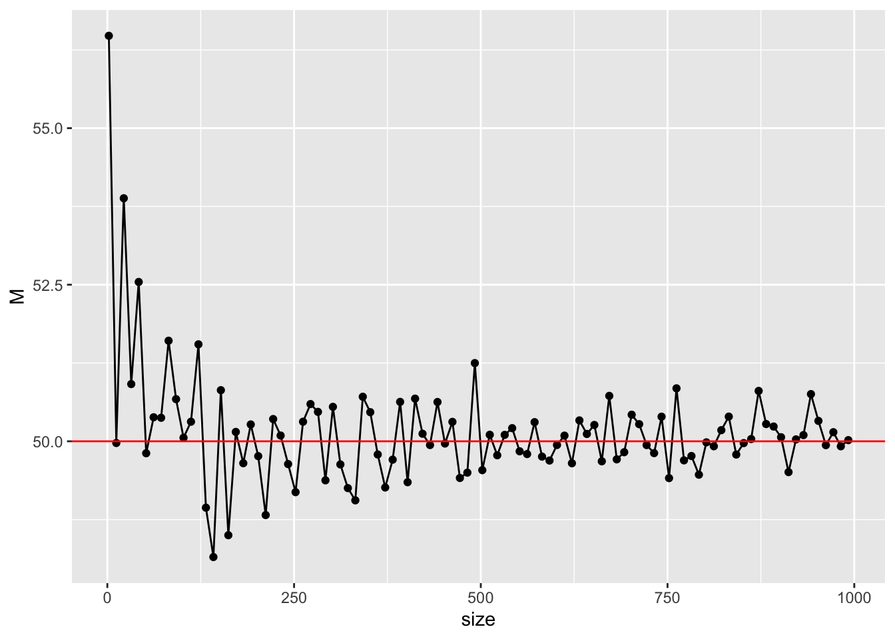

# base graphics with curve()
curve(dnorm(x), from = -4, to = 4)
Statistics and probability are intimately connected. Three uses of probability concur in statistical practice.
First, when many data points are collected, an overall regularity emerges that no individual case could reveal. Probability is the natural language for describing that overall pattern.
Second, even when the data are limited, they are typically thought of as a sample drawn from some larger whole, and the question is how the sample reflects the properties of the whole. Probability captures the chance involved in drawing a sample from the whole.
Third, even a system whose behaviour is theoretically known will, in practice, exhibit both systematic deviations and irreducibly random errors. Systematic deviations can be addressed by recalibration; random errors must be modelled via the probability they follow.
Psychology takes human beings as its subjects, but cannot examine every human being at once, so a sample is drawn for observation or experiment (the second case above). In data science the resulting datasets sometimes run to millions of records; in psychology they are often only a handful to a few dozen. Even when a psychological pattern can be modelled theoretically, actual behaviour will contain error (the third case). For this reason, the data of psychology are treated as random variables, and inferential statistics — drawing conclusions about a population from a small sample — is the principal tool.
In its strict mathematical sense, probability is defined through layered concepts of set theory, integration, and measure.1 We will not dive into those foundations. It is enough, for our purposes, to think of probability as “a real number between 0 and 1 expressing the relative plausibility of a particular outcome.” This loose definition admits both the frequentist interpretation (“the proportion of all possible cases in which the event obtains”) and the subjective interpretation (“the strength of one’s belief in its truth, subjectively weighted”).2
You may remember probability from high-school mathematics as the tedious enumeration of permutations and combinations, but “I’d say it’s eight or nine chances out of ten” (80–90% confidence) is also a perfectly serviceable kind of probability. The concept has wide reach in daily life. A useful intuition is to think of probability as area: relative to the total space of possible situations, what fraction of the area does the event of interest occupy? (平岡 and 堀 (2009) uses this area-based picture throughout, and it makes ideas such as conditional probability particularly clear.)
One distinction worth keeping clearly in mind: a random variable versus its realisation. The values in a dataset or spreadsheet are realisations of a random variable — the values that were actually observed — while the random variable itself is the variable as a generator of uncertain outcomes. A die is a random variable; the face it shows on a particular roll is a realisation. A psychological variable is a random variable; the data we collect are its realisations. We learn about the variable, and infer the whole, by studying realisations.
It may feel hard to reason about an abstract entity that lies beyond the data in front of you. That difficulty is universal — probability is genuinely hard to grasp precisely. But by working with the implementations in R, you can build understanding through concrete manipulation.
The realisations of a random variable follow a probability distribution — an inventory of how likely each possible value is, typically represented as a function. When the realisations are continuous, the function is a probability density function (pdf); when discrete, a probability mass function (pmf).
R provides built-in functions for many standard distributions. For the most familiar of them — the normal distribution — the following are illustrative.
# base graphics with curve()
curve(dnorm(x), from = -4, to = 4)
# the same plot in ggplot2
pacman::p_load(tidyverse)
data.frame(x = seq(-4, 4, by = 0.01)) %>%
mutate(y = dnorm(x)) %>%
ggplot(aes(x = x, y = y)) +
geom_line() +
theme_classic()
The function dnorm() follows R’s naming convention: d stands for density, and norm for normal distribution. The same pattern combines a prefix letter with an abbreviated distribution name. Other prefixes are p, q, and r. Examples: dpois() (Poisson density), pnorm() (normal cumulative distribution), rbinom() (random draws from a binomial).
Continuing with the normal distribution: it is characterised by two parameters, the mean \(\mu\) and the standard deviation \(\sigma\). The numbers that index a probability distribution are called its parameters. The three curves below are normal distributions with different parameters.
data.frame(x = seq(-4, 4, by = 0.01)) %>%
mutate(
y1 = dnorm(x, mean = 0, sd = 1),
y2 = dnorm(x, mean = 1, sd = 0.5),
y3 = dnorm(x, mean = -1, sd = 2)
) %>%
pivot_longer(-x) %>%
ggplot(aes(x = x, y = value, color = name)) +
geom_line()
The mean is a location parameter and the standard deviation a scale parameter: the mean shifts the curve sideways, while the standard deviation stretches or compresses it. Conversely, the parameters can be tuned so that a normal distribution matches a given dataset. Any unimodal symmetric distribution can be modelled with reasonable fidelity by a normal.
The functions above all begin with d (density). What do p and q give us? The numeric example and figure below show the correspondence.
# cumulative distribution function
pnorm(1.96, mean = 0, sd = 1)[1] 0.9750021# inverse cumulative distribution function
qnorm(0.975, mean = 0, sd = 1)[1] 1.959964If the numbers alone are unintuitive, the figure clarifies. Given an x-coordinate, pnorm() returns the area under the density curve up to that point — i.e., the cumulative probability (the shaded region below). Given a cumulative probability, qnorm() returns the x-coordinate beyond which lies that area.
# plot
prob <- 0.9
## full normal curve
df1 <- data.frame(x = seq(from = -4, 4, by = 0.01)) %>%
mutate(y = dnorm(x, mean = 0, sd = 1))
## data up to qnorm(0.975)
df2 <- data.frame(x = seq(from = -4, qnorm(prob), by = 0.01)) %>%
mutate(y = dnorm(x, mean = 0, sd = 1))
## note the different data frames
ggplot() +
geom_line(data = df1, aes(x = x, y = y)) +
geom_ribbon(data = df2, aes(x = x, y = y, ymin = 0, ymax = y), fill = "blue", alpha = 0.3) +
## annotations
geom_segment(
aes(x = qnorm(prob), y = dnorm(qnorm(prob)), xend = qnorm(prob), yend = 0),
arrow = arrow(length = unit(0.2, "cm")), color = "red"
)
The prefixes d, p, q, and r are used uniformly across distributions. Next we discuss r.
Explaining what a random number is is no easier than explaining what it means to be “random” (to be a random variable) in the first place. In informal terms, a random number is one drawn from a sequence with no pattern.
A computer, however, deterministically follows an algorithm; strictly speaking it cannot produce numbers that have no pattern. The numbers it does produce are generated by a pseudo-random number generator: they look random but are governed by an internal algorithm. Strictly speaking they are pseudo-random numbers.
Even so, pseudo-random numbers exhibit far less pattern than numbers a human might pick “at random.”3 They are pseudo-random in name but adequate in practice. Application examples include the gacha (loot-box) mechanisms in mobile games — a random number is drawn internally to determine the prize — and battle systems in role-playing games that miss with a certain probability or score a “critical hit” with another. The important point is that even when game behaviour is driven by patternless numbers, the underlying statistical properties — the long-run probabilities of various outcomes — must be controllable.
Hence we want pseudo-random numbers drawn from a specified probability distribution. Fortunately, pseudo-random uniform variates (in which every value is equally likely) can be transformed by suitable functions to follow the normal and many other distributions, and R provides built-in generators for many common distributions. The following draws ten values from a normal with mean 50 and SD 10:
rnorm(n = 10, mean = 50, sd = 10) [1] 50.20744 40.03611 37.35870 45.46970 63.42025 44.51339 61.54155 53.33185
[9] 39.18686 60.89924If you need a sequence of numbers for a homework problem, this is one way to get one. But the next time you ask for ten such numbers, you will get a different sequence:
rnorm(n = 10, mean = 50, sd = 10) [1] 50.00678 68.20880 53.74145 41.07743 69.52535 45.85572 37.32663 44.66317
[9] 65.39495 60.82704You may want reproducibility — the same “random” sequence on every run. Use set.seed(): a pseudo-random sequence is determined by an internal seed, and fixing the seed fixes the sequence.
# set the seed
set.seed(12345)
rnorm(n = 3)[1] 0.5855288 0.7094660 -0.1093033# reset to the same seed
set.seed(12345)
rnorm(n = 3)[1] 0.5855288 0.7094660 -0.1093033One use of random numbers, as above, is in programs that need to behave probabilistically.
A second is to get a concrete grip on a probability distribution. The figure below shows histograms of samples of size \(n = 10, 100, 1000, 10000\) drawn from the standard normal:
rN10 <- rnorm(10)
rN100 <- rnorm(100)
rN1000 <- rnorm(1000)
rN10000 <- rnorm(10000)
data.frame(
N = c(
rep(1, 10), rep(2, 100),
rep(3, 1000), rep(4, 10000)
),
X = c(rN10, rN100, rN1000, rN10000)
) %>%
mutate(N = as.factor(N)) %>%
ggplot(aes(x = X, fill = N)) +
# relative frequency on the y-axis
geom_histogram(aes(y = ..density..)) +
facet_wrap(~N)Warning: The dot-dot notation (`..density..`) was deprecated in ggplot2 3.4.0.
ℹ Please use `after_stat(density)` instead.`stat_bin()` using `bins = 30`. Pick better value `binwidth`.
At \(n = 10\) the histogram is irregular, but as \(n\) grows the shape converges to the theoretical normal density.
R provides similar functions for the Poisson, binomial, t, F, and chi-squared distributions, among many others. Parameter values for these distributions are not always intuitive, but drawing a large random sample with chosen parameters and plotting a histogram quickly makes the shape concrete.
The recent rise of Bayesian statistics is in large part a consequence of advances in computing. Markov chain Monte Carlo (MCMC) is a technique for sampling from a posterior distribution even when that distribution has no closed form. Such distributions defy analytic description, but by drawing random samples and inspecting their histogram one can visualise the shape directly.
A second advantage of sampling is that it gives easy numerical approximations to probabilities. Suppose we want the area under the standard-normal density between \(-1.5\) and \(+1.5\): \[ p = \int_{-1.5}^{+1.5} \frac{1}{\sqrt{2\pi}}e^{-\frac{x^2}{2}} dx. \]
Analytically, we use pnorm():
pnorm(+1.5, mean = 0, sd = 1) - pnorm(-1.5, mean = 0, sd = 1)[1] 0.8663856The same answer, to good approximation, can be obtained by simulation:
x <- rnorm(100000, mean = 0, sd = 1)
df <- data.frame(X = x) %>%
# flag whether each draw falls within the range of interest
mutate(FLG = ifelse(X > -1.5 & X < 1.5, 1, 2)) %>%
mutate(FLG = factor(FLG, labels = c("in", "out")))
## tabulate
df %>%
group_by(FLG) %>%
summarise(n = n()) %>%
mutate(prob = n / 100000)# A tibble: 2 × 3
FLG n prob
<fct> <int> <dbl>
1 in 86642 0.866
2 out 13358 0.134We drew 100,000 random values and added a factor FLG indicating whether each falls inside the target range. Grouping by FLG and dividing by the total yields a relative frequency. The probability — the proportional area corresponding to the region — comes out to about 0.866, in good agreement with the pnorm() answer.
Visualising the region is equally easy:
## visualisation
df %>%
ggplot(aes(x = X, fill = FLG)) +
geom_histogram(binwidth = 0.01)
To repeat: even when the shape of a probability distribution is unintuitive, or when no analytic expression for it is available, a concrete random sample lets us visualise it and approximately compute probabilities from it.
If “approximation” makes you nervous, increase the sample size by a factor of 10 or 100. On modern hardware the additional cost is negligible. The conceptual payoff — turning a hard integral into the tabulation of a sample — is enormous.
It bears mentioning that the data psychologists collect from experiment or survey are subject to individual differences and measurement error and are therefore modelled as random variables. Even when only a handful or a few dozen observations are available, statistical procedures treat them as draws from a normal (or some other) distribution. The same procedures can be applied to data generated by a random-number generator — there is no fundamental difference. This means that the entire analysis can be simulated before data collection. Knowing in advance what kinds of behaviour to expect — by simulating what your planned procedure would produce on synthetic data — is a valuable exercise prior to running the real study.
Use random numbers from a normal distribution to approximate each of the following quantities. Aim for accuracy of two decimal places relative to the “true” value calculated analytically.
pnorm(110, mean = 65, sd = 10) - pnorm(90, mean = 65, sd = 10)[1] 0.0062062681 - pnorm(7, mean = 10, sd = 10)[1] 0.6179114So far we have used random numbers to inspect probability distributions. We now turn to the role of probability distributions in inferential statistics. In inferential statistics the entire collection of interest is the population, and the (typically small) subset we actually observe is the sample. The aim is to infer properties of the population using statistics computed from the sample. The numerical properties of the population are its parameters — written with the “population” prefix in Japanese (母平均, etc.) — including the population mean and population variance. The corresponding quantities computed on the sample are the sample mean, sample variance, and so on.
A concrete example via random numbers. Suppose there is a village of 100 people, and we measure each person’s height. Generating 100 reasonable numbers by hand is tedious, so we use random numbers as a stand-in.
set.seed(12345)
# 100 heights, rounded to 2 decimal places
Po <- rnorm(100, mean = 150, sd = 10) %>% round(2)
print(Po) [1] 155.86 157.09 148.91 145.47 156.06 131.82 156.30 147.24 147.16 140.81
[11] 148.84 168.17 153.71 155.20 142.49 158.17 141.14 146.68 161.21 152.99
[21] 157.80 164.56 143.56 134.47 134.02 168.05 145.18 156.20 156.12 148.38
[31] 158.12 171.97 170.49 166.32 152.54 154.91 146.76 133.38 167.68 150.26
[41] 161.29 126.20 139.40 159.37 158.54 164.61 135.87 155.67 155.83 136.93
[51] 144.60 169.48 150.54 153.52 143.29 152.78 156.91 158.24 171.45 126.53
[61] 151.50 136.57 155.53 165.90 144.13 131.68 158.88 165.93 155.17 137.04
[71] 150.55 142.15 139.51 173.31 164.03 159.43 158.26 141.88 154.76 160.21
[81] 156.45 160.43 146.96 174.77 159.71 168.67 156.72 146.92 155.37 158.25
[91] 140.36 141.45 168.87 146.08 140.19 156.87 144.95 171.58 144.00 143.05These 100 people form the population, so the population mean and population variance are:
M <- mean(Po)
V <- mean((Po - M)^2)
# population mean
print(M)[1] 152.4521# population variance
print(V)[1] 123.0206Now suppose we draw a random sample of 10 people from the village. We could just take the first 10 elements of the vector, but R provides sample() for this purpose:
s1 <- sample(Po, size = 10)
s1 [1] 164.61 155.86 136.93 143.29 160.43 168.87 151.50 155.17 153.71 135.87s1 is the data in hand. Collecting data in a psychology experiment looks similar: we extract a tiny piece from the much larger whole. The mean and variance computed on this sample are the sample mean and sample variance:
m1 <- mean(s1)
v1 <- mean((s1 - mean(s1))^2)
# sample mean
print(m1)[1] 152.624# sample variance
print(v1)[1] 110.2049In this draw the population mean is 152.4521 and the sample mean is 152.624. In practice only the sample value is available, so it is perfectly reasonable to guess that the population mean is close to 152.624. But the sample mean depends on which units happened to be sampled. Let us draw another sample:
s2 <- sample(Po, size = 10)
s2 [1] 154.76 135.87 143.05 171.45 136.57 170.49 156.87 158.25 155.17 155.20m2 <- mean(s2)
v2 <- mean((s2 - mean(s2))^2)
# sample mean (second draw)
print(m2)[1] 153.768This time the sample mean is 153.768. If this had been the data you collected, you would have inferred a population mean “close to 153.768.” Sample 1’s 152.624 is closer to the true value 152.4521 than sample 2’s 153.768 (differences -0.1719 and -1.3159 respectively). In short, sampling carries a hit-or-miss element. Whether a study supports a hypothesis or not is, in part, subject to such probabilistic fluctuation.
In other words, the sample is a random variable, and so are statistics computed from it. To estimate a population parameter from a sample statistic, one must understand the statistic’s properties and the distribution it follows. Below we consider what desirable properties an estimator might have.
Most simply, we would like the sample statistic to be close to the population parameter — ideally, to converge to it. The example above used a sample of size 10 from a village of 100; with 20 or 30 units we expect to get closer. This property is called consistency, and it is one of the desirable properties of an estimator. Fortunately, the sample mean is a consistent estimator of the population mean.
Let us check by simulation. Vary the sample size and recompute. Concretely, draw samples of size 2 up to 1000 from a normal with mean 50 and SD 10 — equivalent to varying the size of an rnorm() call — and compute each sample mean.
set.seed(12345)
sample_size <- seq(from = 2, to = 1000, by = 10)
# storage for the sample means
sample_mean <- rep(0, length(sample_size))
# loop
for (i in 1:length(sample_size)) {
sample_mean[i] <- rnorm(sample_size[i], mean = 50, sd = 10) %>%
mean()
}
# visualisation
data.frame(size = sample_size, M = sample_mean) %>%
ggplot(aes(x = size, y = M)) +
geom_point() +
geom_line() +
geom_hline(yintercept = 50, color = "red")
As \(n\) grows, the sample mean approaches the true value of 50. Try varying the population distribution, parameters, and sample size to see the effect.
An estimator is a random variable, and its behaviour can be described by a probability distribution. The distribution of a sample statistic is called the sampling distribution. If the sampling distribution is known, one can compute its expectation and variance. A second desirable property of an estimator is that its expectation equals the population parameter; this is called unbiasedness.
A common stumbling block for new students of psychological statistics is the convention of dividing by \(n-1\) rather than \(n\) when computing a “variance.” The \(n-1\) version is the unbiased variance, and it differs from the sample variance (which divides by \(n\)). The former is unbiased; the latter is not. Let us verify by simulation.
Repeatedly draw a sample of size \(n = 20\) from a normal with mean 50 and SD 10 (so the population variance is \(10^2 = 100\)). For each sample compute the sample variance and the unbiased variance, and take the mean (i.e., approximate the expectation):
iter <- 5000
vars <- rep(0, iter)
unbiased_vars <- rep(0, iter)
## generate samples and compute
set.seed(12345)
for (i in 1:iter) {
sample <- rnorm(n = 20, mean = 50, sd = 10)
vars[i] <- mean((sample - mean(sample))^2)
unbiased_vars[i] <- var(sample)
}
## expectations
mean(vars)[1] 95.08531mean(unbiased_vars)[1] 100.0898The mean — i.e., the expectation — of the sample variances stored in vars is 95.0853144, noticeably below the true value of 100. The mean of the unbiased variances (using R’s built-in var()) is 100.0898047, much closer to 100. The sample variance is biased; the \(n-1\) correction was introduced precisely to remove that bias. If this clears up any earlier irritation, good.
Another desirable property is efficiency, on which see 小杉 et al. (2023). That text also discusses non-normal cases and other sample statistics (e.g., correlations), all via simulation. When mathematical statistics starts to feel tiring, that book is a good companion.
A sample statistic is a random variable, changing with each new sample. The sample mean has the desirable properties of consistency and unbiasedness, but it is not equal to the population mean.
Trying to pinpoint the population mean with a single sample-mean realisation is, almost surely, a losing gamble. Instead, we estimate the parameter with a range.
For example, suppose the population is normal with mean 50 and SD 10, and we draw a sample of size 10 and use its sample mean as a point estimate of the population mean. Let us now widen this estimate to a range — say the sample mean ± 5 — and ask, by simulation, how often this interval estimate correctly captures the true value:
iter <- 10000
n <- 10
mu <- 50
SD <- 10
# storage for the sample means
m <- rep(0, iter)
set.seed(12345)
for (i in 1:iter) {
# draw a sample and record the sample mean
sample <- rnorm(n, mean = mu, sd = SD)
m[i] <- mean(sample)
}
result.df <- data.frame(m = m) %>%
# TRUE when the estimate captures the truth, FALSE otherwise
mutate(
point_estimation = ifelse(m == mu, TRUE, FALSE),
interval_estimation = ifelse(m - 5 <= mu & mu <= m + 5, TRUE, FALSE)
) %>%
summarise(
n1 = sum(point_estimation),
n2 = sum(interval_estimation),
prob1 = mean(point_estimation),
prob2 = mean(interval_estimation)
) %>%
print() n1 n2 prob1 prob2
1 0 8880 0 0.888Point estimates never hit the truth exactly — unsurprising, since they are real numbers and any tiny discrepancy counts. Interval estimates, by contrast, contain the true value in 8880 of 10^{4} trials, a hit rate of 88.8%.
To raise the interval-estimate hit rate to 100%, the interval would have to be infinite — which is the same as estimating nothing at all. By convention, we accept a failure rate of about 5%, aiming for a 95% hit rate. The corresponding interval is the 95% confidence interval.
We could continue the simulation, adjusting the interval width until the empirical coverage equals 95%, but this is tedious. Some properties of estimators are well established by inferential statistics, and we appeal to one here.
If the population follows a normal distribution with mean \(\mu\) and variance \(\sigma^2\), the sampling distribution of the sample mean is itself normal with mean \(\mu\) and variance \(\sigma^2/n\) (standard deviation \(\sigma/\sqrt{n}\)).
The 95% interval of the standard normal extends to about \(\pm 1.96\):
# cut off 2.5% from each tail
qnorm(0.025)[1] -1.959964qnorm(0.975)[1] 1.959964Combining these, for a sample mean \(\bar{X}\), the 95% confidence interval — using 1.96 standard deviations — is
\[ \bar{X} - 1.96 \frac{\sigma}{\sqrt{n}} \le \mu \le \bar{X} + 1.96 \frac{\sigma}{\sqrt{n}} \]
Let us verify by simulation. The empirical coverage is close to 95%:
interval <- 1.96 * SD / sqrt(n)
result.df2 <- data.frame(m = m) %>%
# TRUE when the interval captures the truth, FALSE otherwise
mutate(
interval_estimation = ifelse(m - interval <= mu & mu <= m + interval, TRUE, FALSE)
) %>%
summarise(
prob = mean(interval_estimation)
) %>%
print() prob
1 0.9498The previous example assumed a known population variance. But if we already knew the population mean and variance, we would not need to estimate them — so in practice the variance is unknown too. Fortunately, replacing the population variance by the unbiased sample variance yields a sample mean that follows a t-distribution with \(n-1\) degrees of freedom (for details see 小杉 et al. (2023)). The 95% interval of a t-distribution is no longer \(\pm 1.96\); it depends on \(n\), so the confidence interval becomes
\[ \bar{X} + T_{0.025}\frac{U}{\sqrt{n}} \le \mu \le \bar{X} + T_{0.975}\frac{U}{\sqrt{n}}, \]
where \(T_{0.025}\) and \(T_{0.975}\) are the 2.5th and 97.5th percentiles of the t-distribution. The t-distribution is symmetric about zero (when its location is zero), so \(T_{0.025} = -T_{0.975}\). \(U^2\) is the unbiased variance; \(U\) is its square root.
Verify by simulation. Again the empirical coverage is close to 95%:
# simulation settings
iter <- 10000
n <- 10
mu <- 50
SD <- 10
# storage
m <- rep(0, iter)
interval <- rep(0, iter)
set.seed(12345)
for (i in 1:iter) {
# draw a sample, record sample mean
sample <- rnorm(n, mean = mu, sd = SD)
m[i] <- mean(sample)
U <- sqrt(var(sample)) # equivalently sd(sample)
interval[i] <- qt(p = 0.975, df = n - 1) * U / sqrt(n)
}
result.df <- data.frame(m = m, interval = interval) %>%
mutate(
interval_estimation = ifelse(m - interval <= mu & mu <= m + interval, TRUE, FALSE)
) %>%
summarise(
prob = mean(interval_estimation)
) %>%
print() prob
1 0.9482rt() draws from a t-distribution; without a non-centrality parameter ncp it has mean zero.)rt(), generate 1,000 draws for \(\nu = 10, 50, 100\) and inspect histograms. Also compute the mean and sample SD and confirm convergence to standard-normal values.quantile() function to simulate the 95% confidence interval and compare with the theoretical value.The first interpretation is the probability taught in high-school mathematics, sometimes called frequentist probability. The second is the kind appealed to in everyday usage (e.g., a precipitation forecast of X%) and is called subjective probability. Critics view the disagreement as ideological rather than mathematical, but in fact Kolmogorov’s axioms can be derived under either interpretation. Personally I think either is fine, provided the user can compute with it.↩︎
No rigorous evidence is on offer, but folk wisdom in Japan (“the lies of 5, 3, 8”) holds that humans asked to say a random digit pick 5, 3, or 8 more often than chance.↩︎